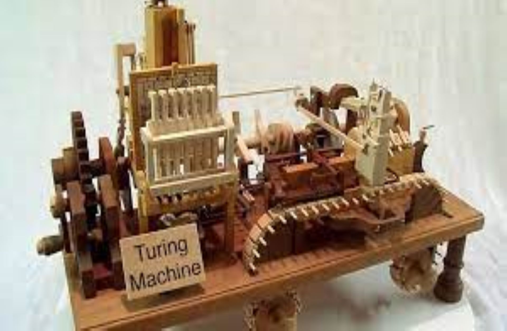

Alan Turing: O pai da computação
No dia 23 de junho de 1912, nasceu Alan Mathison Turing, em Londres. O segundo e último filho de Julius Mathison e Ethel Sara Turing.Em 1926, Alan Turing foi estudar em Sherborne School, uma escola pública localizada em Sherborne, no sudoeste da Inglaterra, onde estudou até 1931. Ano este em que foi para a universidade Kings College, em Cambridge, Inglaterra. Foi lá onde ele começou a se interessar por problemas de lógica matemática e ganhou prêmios por seus trabalhos sobre teoria da probabilidade. Ainda em 1931, Turing se deparou com o problema de incompletude da matemática: a existência de afirmações verdadeiras sobre números que não puderam ser provadas formalmente por meio das regras estabelecidas de dedução.
Foi então que Turing analisou o problema e procurou uma resposta para a seguinte pergunta: “Poderia existir um processo pelo qual fosse possivel computar qualquer coisa?” Turing imaginara algo feito mecanicamente, uma máquina capaz de executar precisamente determinadas operações. Em 1936, a ideia da Máquina de Turing estava pronta e consistia em uma fita de papel potencialmente infinita, na qual estava escrito um número finito de símbolos (por exemplo, símbolos binários) e um scanner que se movia para trás e para frente ao longo da fita, lendo símbolo por símbolo. Porém, a ideia de Turing só tomou corpo 9 anos depois, quando a máquina pôde tomar forma eletrônica e ser testada. O princípio da Máquina de Turing se tornou fundamento da teoria moderna da computação; uma máquina que pode modelar qualquer tarefa bem definida, quando suprida por um programa adequado.Turing passou dois anos matriculado como aluno de pós-graduação na Princeton University, em New Jersey, Estados Unidos, onde trabalhou com lógica, álgebra e teoria dos números, mostrando que a sua definição de computabilidade coincidia com a do lógico americano, Alonzo Church, a extensão das ideias de Turing resultou na sua tese de Ph. D sobre Lógica Ordinal. Em 1938, com o início da Segunda Guerra Mundial, Turing retorna à Cambridge, onde trabalha secretamente para o Departamento Criptanalítico Bretão, também chamado de Escola de Criptografia e Código do Governo. O trabalho de Turing era decifrar mensagens dos alemães criptografadas por uma máquina patenteada por Arthur Scherbius, engenheiro eletrotécnico alemão, chamada Enigma. Um dos principais projetos de Turing, nesse período, foi Colossus, um computador inglês capaz de quebrar os códigos ultrassecretos produzidos pela Enigma.
No final da guerra, Turing tinha como objetivo criar o computador digital, ou seja, implementar a Máquina de Turing Universal. Embora o seu trabalho de 1936 mostrasse limitações absolutas do computável, Turing ficou fascinado com o que as máquinas de Turing poderiam fazer. Von Neumann, um grande matemático aplicou os princípios de Turing e, em junho de 1948, o mundo teve a primeira demonstração prática de um computador.Ainda em 1948, Von Neumann, membro do Instituto de Estudos Avançados em Princeton, convidou Alan Turing para ser diretor do laboratório de computação da Universidade de Manchester, e ele aceitou o convite. Turing deu prosseguimento aos seus estudos mudando o foco para Inteligência Artificial, tendo sido o pioneiro no assunto ligando a abstração de sistemas cognitivos à realidade dos números. Turing desenvolveu um teste para verificar se um computador era dotado de inteligência artificial ou não. A partir de todos esses feitos, começou a ser desenhada a ideia de computabilidade, e Turing foi considerado o “pai da Computação”. Na manhã do dia 8 de junho de 1954, Turing foi encontrado morto com uma maçã comida pela metade ao lado de sua cama. A fruta havia sido mergulhada numa jarra de cianureto (também conhecido popularmente como cianeto) e o veredicto do médico foi suicídio.Resta-nos lembrar sempre dos esforços de Turing no avanço da tecnologia e levar o seu exemplo de força e dedicação para nossas vidas.
Referências:
Nunes, Mayza. Grupo PET Computação UFCG, 2012.